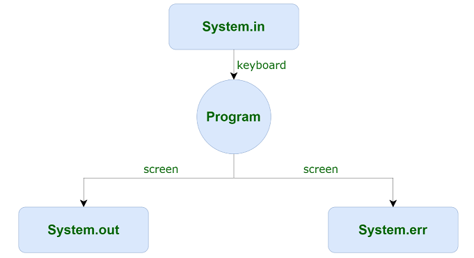
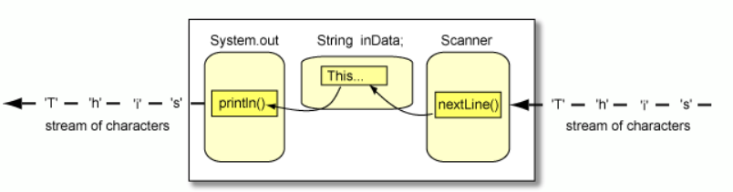
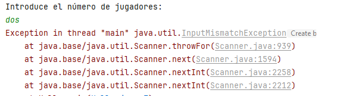
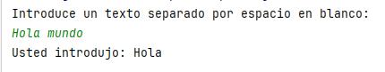
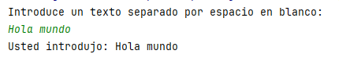
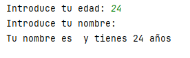
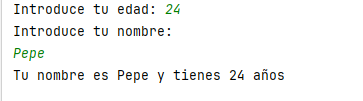

💾 Programación de la consola: entrada y salida de información (I/O input/output)¶
Java viene con una biblioteca de clases que se puede usar para realizar tareas comunes. La biblioteca de clases de Java está organizada en un conjunto de paquetes, donde cada paquete contiene una colección de clases relacionadas.
En esta sección presentamos las clases System y Scanner que se utilizan para imprimir la salida y leer la entrada de un programa.
El tipo más simple de interfaz de usuario es la interfaz de línea de comandos, en la que la entrada se toma de la línea de comandos a través del teclado y la salida se muestra en la consola. Algunas aplicaciones Java utilizan este tipo de interfaz otros usan interfaz gráfica como veremos más adelante.


Salida de la información¶
En Java, cualquier origen o destino de I/O se considera un flujo de bytes o caracteres. Para realizar la salida, insertamos bytes o caracteres en la secuencia. Para realizar la entrada, extraemos bytes o caracteres del flujo (stream). Incluso los caracteres introducidos en un teclado, si se consideran como una secuencia de pulsaciones de teclas, se pueden representar como un stream.
En Java, la I/O se maneja a través de métodos que pertenecen a clases contenidas en el paquete java.io. Ya hemos visto cómo se usa el método de salida println() para enviar una cadena a la consola. Por ejemplo:
System.out.println("Hola mundo");
imprime el texto Hola mundo por la consola.
Los objetos System.out y System.err se pueden usar para escribir la salida en la consola. Como sugiere su nombre, el flujo de errores se usa principalmente para mensajes de error, mientras que el flujo de salida se usa para otras salidas impresas.
System.err.println("Fallo al abrir el fichero");
De manera similar, como sugiere su nombre, el objeto System.in se puede usar para manejar la entrada, que se trata en el siguiente punto.
La única diferencia entre los métodos print() y println() es que println() también imprimirá un retorno de carro y un avance de línea después de imprimir sus datos, lo que permitirá que la salida posterior se imprima en una nueva línea. Por ejemplo:
System.out.print("Hola");
System.out.print("mundo"):
System.out.println("Texto con salto de línea");
System.out.println("adiós");
HolamundoTexto con salto de línea
adiós
Entrada de la información java.util.Scanner¶
Se ha agregado la clase Scanner al paquete java.util que permite la entrada de teclado sin forzar el programador para manejar las excepciones. La clase Scanner está diseñada para ser una forma muy flexible de reconocer fragmentos de datos que se ajustan a patrones específicos de cualquier flujo de entrada.
Para usar la clase Scanner para la entrada de teclado, debemos crear una instancia de Scanner y asociarla con System.in. La clase tiene un constructor para este propósito, por lo que la declaración
Scanner sc = new Scanner(System.in);
declara y crea una instancia de un objeto que se puede utilizar para la entrada del teclado. Después de crear un objeto Scanner, podemos hacer una llamada a:
- nextByte() para leer un dato de tipo byte.
- nextShort() para leer un dato de tipo short.
- nextInt() para leer un dato de tipo int.
- nextLong() para leer un dato de tipo long.
- nextFloat() para leer un dato de tipo float.
- nextDouble() para leer un dato de tipo double.
- nextBoolean() para leer un dato de tipo boolean.
- nextLine() para leer un String hasta encontrar un salto de línea.
- next() para leer un String hasta el primer delimitador, generalmente hasta un espacio en blanco o hasta un salto de línea.
public static void main(String[] args) {
Scanner sc = new Scanner (System.in);
System.out.println("Introduce un número: ");
int num = sc.nextInt();//Read the integer
System.out.println("El número introducido es: " + num);
}
Cuando se ejecuta el método nextInt(), no se ejecutan más declaraciones hasta que el método devuelve un valor int. Normalmente, esto no sucede hasta que el usuario ha escrito los dígitos de un número entero y presiona la tecla Intro.
Para leer un String utilizamos el método next(). Pero lee hasta el primer espacio o salto de línea.
public static void main(String[] args) {
Scanner sc = new Scanner (System.in);
System.out.println("Introduce una palabra: ");
String str = sc.next();
System.out.println(str);
}
Un objeto Scanner tiene un conjunto de cadenas de caracteres que separan o delimitan los fragmentos de datos que está buscando. De forma predeterminada, este conjunto de delimitadores consta de cualquier secuencia no vacía de caracteres en blanco, es decir, los caracteres de espacio, tabulación, retorno y nueva línea. Esto permitirá al usuario ingresar varios números enteros separados por espacios antes de presionar la tecla Enter. En código sería:
System.out.print("Introduce dos números: ");
int num = sc.nextInt();
int num2 = sc.nextInt();
Errores: Si el dato encontrado no es del tipo esperado o de un tipo compatible se produce un error. En este caso se lanza la excepción InputMismatchException. Esto se produce, por ejemplo, cuando se está ejecutando el método nextInt() para extraer un entero del buffer y se introduce por ejemplo un double o un char.

Los espacios en blanco como delimitadores también significan que el método next() no puede devolver una cadena vacía ni puede devolver una cadena que contenga espacios. Por ejemplo, considere el código:
System.out.println("Introduce un texto separado por espacio en blanco: ");
String str = sc.next();
System.out.println("Usted introdujo: "+str);
Si se escribe "Hola mundo" y se presiona la tecla enter, la cadena str almacenará sólo "Hola".

Para que un objeto Scanner lea cadenas que contienen espacios, debemos usar el método nextLine():
System.out.println("Introduce un texto separado por espacio en blanco: ");
String str = sc.nextLine();
System.out.println("Usted introdujo: "+str);

Limpiar el buffer de entrada¶
Cuando el usuario introduce un dato, scanner lee hasta que encuentra un espacio o un intro('/n'), pero este intro queda en el buffer, por lo que en una segunda lectura de datos por scanner se lo encontrará como primer carácter por lo que no leerá los datos del usuario correctamente
Scanner sc = new Scanner(System.in);
System.out.print("Introduce tu edad: ");
//el usuario introduce el numero pero queda '/n' en el buffer
int edad = sc.nextInt();
System.out.println("Introduce tu nombre:");
//El programa no para ya que scanner encuentra datos en el buffer
//En nuestro caso el caracter '/n', por lo que no lee el nombre
String nombre = sc.nextLine();
System.out.println("Tu nombre es " + nombre + " y tienes " + edad + " años");

La solución radica en limpiar el buffer de entrada mediante nextLine después de leer el número.
Scanner sc = new Scanner(System.in);
System.out.print("Introduce tu edad: ");
int edad = sc.nextInt();
//limpiamos el buffer
sc.nextLine();
System.out.println("Introduce tu nombre:");
String nombre = sc.nextLine();
System.out.println("Tu nombre es " + nombre + " y tienes " + edad + " años");
